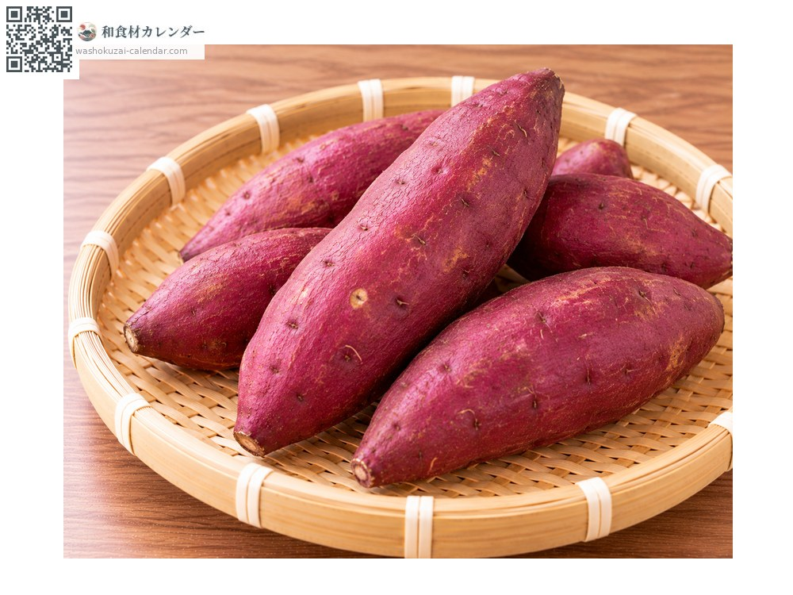
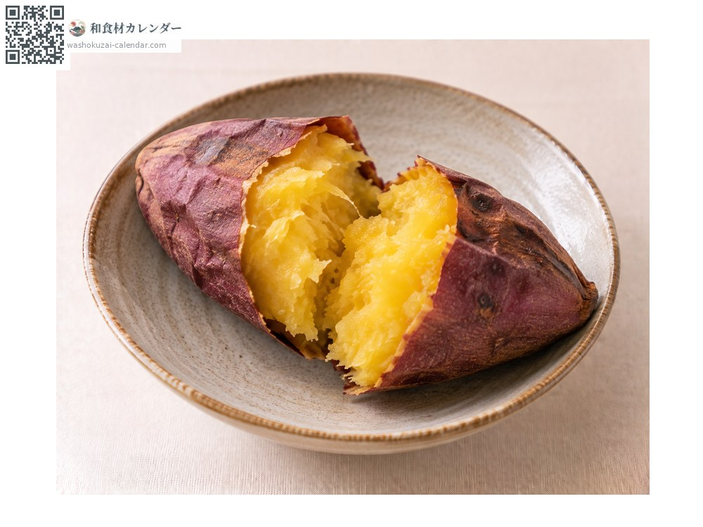
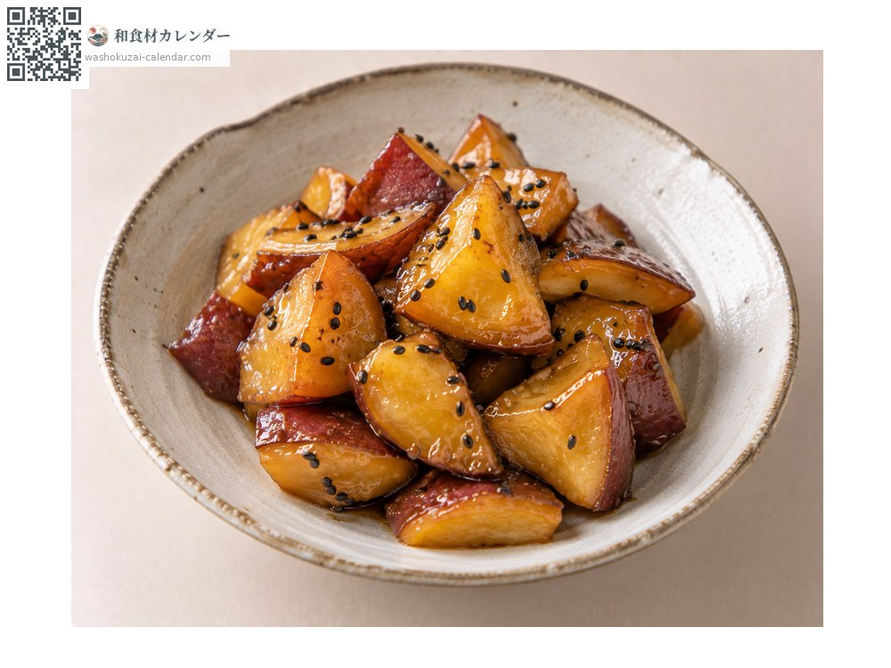
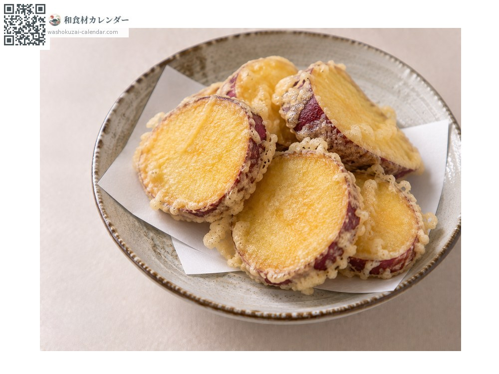
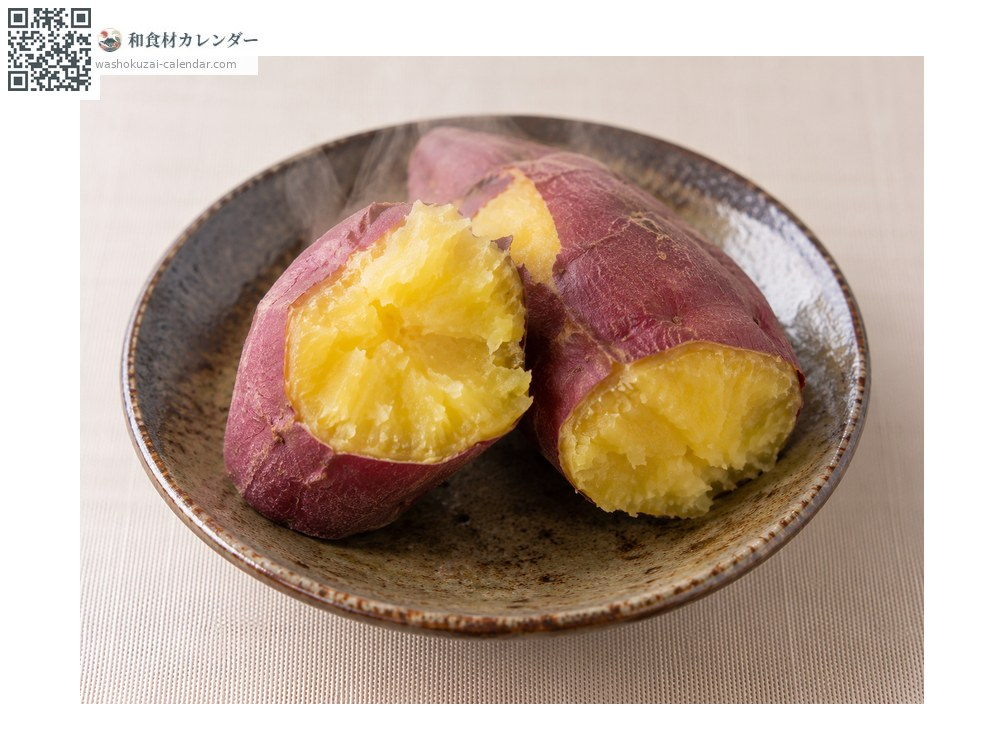

蔬菜
番薯（甘藷）
サツマイモ さつまいも
當令時期為1月、2月、10月、11月、12月

當令時期
1月
2月
3月
4月
5月
6月
7月
8月
9月
10月
11月
12月
當令有供應
料理方式

烤番薯
低溫慢烤會更甜。

拔絲地瓜（大學芋）
油炸後裹上糖漿。

天婦羅
切薄片油炸。

蒸番薯
單純蒸熟，品嚐原味。
挑選方式
外皮顏色深且均勻、沒有傷口或凹陷。拿起來沉甸甸的。
保存方式
不耐低溫。避免放冰箱，用報紙包好放在常溫陰涼處。
主要產地
小知識
採收後貯藏1至2個月會更甜。低溫慢慢加熱可讓酵素作用，甜味更明顯。